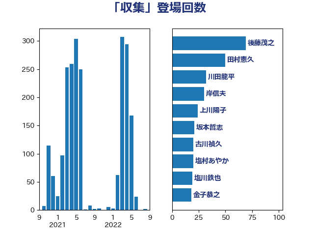

単語「収集」

| 後藤茂之 | 自由民主党 | 69 回 |
| 田村憲久 | 自由民主党 | 50 回 |
| 川田龍平 | 立憲民主党 | 32 回 |
| 岸信夫 | 自由民主党 | 30 回 |
| 上川陽子 | 自由民主党 | 24 回 |
| 坂本哲志 | 自由民主党 | 21 回 |
| 古川禎久 | 自由民主党 | 20 回 |
| 塩村あやか | 立憲民主党 | 20 回 |
| 塩川鉄也 | 日本共産党 | 19 回 |
| 金子恭之 | 自由民主党 | 18 回 |
| 小泉進次郎 | 自由民主党 | 17 回 |
| 平山佐知子 | 無所属 | 17 回 |
| 菅義偉 | 自由民主党 | 17 回 |
| 伊波洋一 | 無所属 | 16 回 |
| 山本博司 | 公明党 | 16 回 |
| 岸田文雄 | 自由民主党 | 16 回 |
| 末松信介 | 自由民主党 | 15 回 |
| 萩生田光一 | 自由民主党 | 15 回 |
| 野上浩太郎 | 自由民主党 | 13 回 |
| 小林鷹之 | 自由民主党 | 12 回 |
| 笹川博義 | 自由民主党 | 12 回 |
| 杉尾秀哉 | 立憲民主党 | 11 回 |
| 阿部知子 | 立憲民主党 | 11 回 |
| 山口壯 | 自由民主党 | 10 回 |
| 山添拓 | 日本共産党 | 10 回 |
| 岸真紀子 | 立憲民主党 | 10 回 |
| 松川るい | 自由民主党 | 10 回 |
| 松野博一 | 自由民主党 | 10 回 |
| 福島みずほ | 社会民主党 | 10 回 |
| 茂木敏充 | 自由民主党 | 10 回 |
| 西村康稔 | 自由民主党 | 10 回 |
| 野田聖子 | 自由民主党 | 10 回 |
| 田村智子 | 日本共産党 | 8 回 |
| 石井苗子 | 日本維新の会 | 8 回 |
| 石川博崇 | 公明党 | 8 回 |
| 中谷一馬 | 立憲民主党 | 7 回 |
| 浅田均 | 日本維新の会 | 7 回 |
| 西銘恒三郎 | 自由民主党 | 7 回 |
| こやり隆史 | 自由民主党 | 6 回 |
| 吉田とも代 | 日本維新の会 | 6 回 |
| 林芳正 | 自由民主党 | 6 回 |
| 鈴木俊一 | 自由民主党 | 6 回 |
| 串田誠一 | 日本維新の会 | 5 回 |
| 井上哲士 | 日本共産党 | 5 回 |
| 倉林明子 | 日本共産党 | 5 回 |
| 吉田統彦 | 立憲民主党 | 5 回 |
| 宮本徹 | 日本共産党 | 5 回 |
| 平木大作 | 公明党 | 5 回 |
| 東徹 | 日本維新の会 | 5 回 |
| 篠原豪 | 立憲民主党 | 5 回 |
| 一谷勇一郎 | 日本維新の会 | 4 回 |
| 井上信治 | 自由民主党 | 4 回 |
| 吉川沙織 | 立憲民主党 | 4 回 |
| 大塚耕平 | 国民民主党 | 4 回 |
| 安江伸夫 | 公明党 | 4 回 |
| 平井卓也 | 自由民主党 | 4 回 |
| 後藤祐一 | 立憲民主党 | 4 回 |
| 徳永エリ | 立憲民主党 | 4 回 |
| 斉藤鉄夫 | 公明党 | 4 回 |
| 柴田巧 | 日本維新の会 | 4 回 |
| 梅村聡 | 日本維新の会 | 4 回 |
| 梶山弘志 | 自由民主党 | 4 回 |
| 横沢高徳 | 立憲民主党 | 4 回 |
| 水岡俊一 | 立憲民主党 | 4 回 |
| 浅野哲 | 国民民主党 | 4 回 |
| 田村貴昭 | 日本共産党 | 4 回 |
| 磯崎仁彦 | 自由民主党 | 4 回 |
| 神谷裕 | 立憲民主党 | 4 回 |
| 高木かおり | 日本維新の会 | 4 回 |
| 鰐淵洋子 | 公明党 | 4 回 |
| 務台俊介 | 自由民主党 | 3 回 |
| 吉田宣弘 | 公明党 | 3 回 |
| 尾身朝子 | 自由民主党 | 3 回 |
| 本田太郎 | 自由民主党 | 3 回 |
| 池下卓 | 日本維新の会 | 3 回 |
| 漆間譲司 | 日本維新の会 | 3 回 |
| 玉木雄一郎 | 国民民主党 | 3 回 |
| 田中健 | 国民民主党 | 3 回 |
| 田名部匡代 | 立憲民主党 | 3 回 |
| 緑川貴士 | 立憲民主党 | 3 回 |
| 西岡秀子 | 国民民主党 | 3 回 |
| 角田秀穂 | 公明党 | 3 回 |
| 赤嶺政賢 | 日本共産党 | 3 回 |
| 足立康史 | 日本維新の会 | 3 回 |
| 阿部司 | 日本維新の会 | 3 回 |
| 青木愛 | 立憲民主党 | 3 回 |
| 鬼木誠 | 立憲民主党 | 3 回 |
| あかま二郎 | 自由民主党 | 2 回 |
| 三原じゅん子 | 自由民主党 | 2 回 |
| 三浦信祐 | 公明党 | 2 回 |
| 三谷英弘 | 自由民主党 | 2 回 |
| 世耕弘成 | 自由民主党 | 2 回 |
| 伊藤孝恵 | 国民民主党 | 2 回 |
| 加藤勝信 | 自由民主党 | 2 回 |
| 北神圭朗 | 無所属 | 2 回 |
| 吉田忠智 | 立憲民主党 | 2 回 |
| 吉良よし子 | 日本共産党 | 2 回 |
| 和田政宗 | 自由民主党 | 2 回 |
| 和田有一朗 | 日本維新の会 | 2 回 |
| 堀内詔子 | 自由民主党 | 2 回 |
| 大口善徳 | 公明党 | 2 回 |
| 宮内秀樹 | 自由民主党 | 2 回 |
| 宮崎雅夫 | 自由民主党 | 2 回 |
| 宮路拓馬 | 自由民主党 | 2 回 |
| 小宮山泰子 | 立憲民主党 | 2 回 |
| 山下芳生 | 日本共産党 | 2 回 |
| 山岸一生 | 立憲民主党 | 2 回 |
| 山本太郎 | れいわ新選組 | 2 回 |
| 山田太郎 | 自由民主党 | 2 回 |
| 岩渕友 | 日本共産党 | 2 回 |
| 梅谷守 | 立憲民主党 | 2 回 |
| 浜田聡 | NHK党 | 2 回 |
| 熊野正士 | 公明党 | 2 回 |
| 片山大介 | 日本維新の会 | 2 回 |
| 田村まみ | 国民民主党 | 2 回 |
| 田畑裕明 | 自由民主党 | 2 回 |
| 矢倉克夫 | 公明党 | 2 回 |
| 石田昌宏 | 自由民主党 | 2 回 |
| 礒崎哲史 | 国民民主党 | 2 回 |
| 秋野公造 | 公明党 | 2 回 |
| 穂坂泰 | 自由民主党 | 2 回 |
| 篠原孝 | 立憲民主党 | 2 回 |
| 紙智子 | 日本共産党 | 2 回 |
| 自見はなこ | 自由民主党 | 2 回 |
| 菊田真紀子 | 立憲民主党 | 2 回 |
| 葉梨康弘 | 自由民主党 | 2 回 |
| 西村智奈美 | 立憲民主党 | 2 回 |
| 谷川とむ | 自由民主党 | 2 回 |
| 遠藤良太 | 日本維新の会 | 2 回 |
| 野間健 | 立憲民主党 | 2 回 |
| 鈴木義弘 | 国民民主党 | 2 回 |
| 鎌田さゆり | 立憲民主党 | 2 回 |
| 長妻昭 | 立憲民主党 | 2 回 |
| 青山大人 | 立憲民主党 | 2 回 |
| 青山繁晴 | 自由民主党 | 2 回 |
| 高野光二郎 | 自由民主党 | 2 回 |
| 高鳥修一 | 自由民主党 | 2 回 |
| 麻生太郎 | 自由民主党 | 2 回 |
| おおつき紅葉 | 立憲民主党 | 1 回 |
| 三浦靖 | 自由民主党 | 1 回 |
| 中司宏 | 日本維新の会 | 1 回 |
| 中山展宏 | 自由民主党 | 1 回 |
| 中川宏昌 | 公明党 | 1 回 |
| 中村裕之 | 自由民主党 | 1 回 |
| 中西祐介 | 自由民主党 | 1 回 |
| 中野洋昌 | 公明党 | 1 回 |
| 中野英幸 | 自由民主党 | 1 回 |
| 丸川珠代 | 自由民主党 | 1 回 |
| 井坂信彦 | 立憲民主党 | 1 回 |
| 今井絵理子 | 自由民主党 | 1 回 |
| 伊藤俊輔 | 立憲民主党 | 1 回 |
| 伊藤岳 | 日本共産党 | 1 回 |
| 佐藤啓 | 自由民主党 | 1 回 |
| 佐藤英道 | 公明党 | 1 回 |
| 前川清成 | 日本維新の会 | 1 回 |
| 古川俊治 | 自由民主党 | 1 回 |
| 古賀友一郎 | 自由民主党 | 1 回 |
| 吉川ゆうみ | 自由民主党 | 1 回 |
| 吉田久美子 | 公明党 | 1 回 |
| 和田義明 | 自由民主党 | 1 回 |
| 国定勇人 | 自由民主党 | 1 回 |
| 堂故茂 | 自由民主党 | 1 回 |
| 塩田博昭 | 公明党 | 1 回 |
| 大家敏志 | 自由民主党 | 1 回 |
| 大岡敏孝 | 自由民主党 | 1 回 |
| 大西健介 | 立憲民主党 | 1 回 |
| 大野敬太郎 | 自由民主党 | 1 回 |
| 室井邦彦 | 日本維新の会 | 1 回 |
| 小川淳也 | 立憲民主党 | 1 回 |
| 小林史明 | 自由民主党 | 1 回 |
| 小森卓郎 | 自由民主党 | 1 回 |
| 小池晃 | 日本共産党 | 1 回 |
| 小沼巧 | 立憲民主党 | 1 回 |
| 小田原潔 | 自由民主党 | 1 回 |
| 小西洋之 | 立憲民主党 | 1 回 |
| 小野泰輔 | 日本維新の会 | 1 回 |
| 山本香苗 | 公明党 | 1 回 |
| 山田勝彦 | 立憲民主党 | 1 回 |
| 山田宏 | 自由民主党 | 1 回 |
| 岩本剛人 | 自由民主党 | 1 回 |
| 岬麻紀 | 日本維新の会 | 1 回 |
| 川合孝典 | 国民民主党 | 1 回 |
| 平沢勝栄 | 自由民主党 | 1 回 |
| 末松義規 | 立憲民主党 | 1 回 |
| 本村伸子 | 日本共産党 | 1 回 |
| 杉久武 | 公明党 | 1 回 |
| 杉本和巳 | 日本維新の会 | 1 回 |
| 松原仁 | 立憲民主党 | 1 回 |
| 松本尚 | 自由民主党 | 1 回 |
| 柚木道義 | 立憲民主党 | 1 回 |
| 柳ヶ瀬裕文 | 日本維新の会 | 1 回 |
| 森まさこ | 自由民主党 | 1 回 |
| 森屋宏 | 自由民主党 | 1 回 |
| 森本真治 | 立憲民主党 | 1 回 |
| 森田俊和 | 立憲民主党 | 1 回 |
| 横山信一 | 公明党 | 1 回 |
| 橋本岳 | 自由民主党 | 1 回 |
| 武見敬三 | 自由民主党 | 1 回 |
| 武部新 | 自由民主党 | 1 回 |
| 河野義博 | 公明党 | 1 回 |
| 津島淳 | 自由民主党 | 1 回 |
| 浅川義治 | 日本維新の会 | 1 回 |
| 浦野靖人 | 日本維新の会 | 1 回 |
| 清水貴之 | 日本維新の会 | 1 回 |
| 源馬謙太郎 | 立憲民主党 | 1 回 |
| 熊田裕通 | 自由民主党 | 1 回 |
| 牧原秀樹 | 自由民主党 | 1 回 |
| 田島麻衣子 | 立憲民主党 | 1 回 |
| 田嶋要 | 立憲民主党 | 1 回 |
| 田野瀬太道 | 無所属 | 1 回 |
| 石井正弘 | 自由民主党 | 1 回 |
| 石原宏高 | 自由民主党 | 1 回 |
| 石橋通宏 | 立憲民主党 | 1 回 |
| 竹谷とし子 | 公明党 | 1 回 |
| 笠浩史 | 無所属 | 1 回 |
| 細田健一 | 自由民主党 | 1 回 |
| 義家弘介 | 自由民主党 | 1 回 |
| 羽田次郎 | 立憲民主党 | 1 回 |
| 舩後靖彦 | れいわ新選組 | 1 回 |
| 船田元 | 自由民主党 | 1 回 |
| 若宮健嗣 | 自由民主党 | 1 回 |
| 藤井比早之 | 自由民主党 | 1 回 |
| 赤池誠章 | 自由民主党 | 1 回 |
| 足立敏之 | 自由民主党 | 1 回 |
| 近藤昭一 | 立憲民主党 | 1 回 |
| 酒井庸行 | 自由民主党 | 1 回 |
| 金子恵美 | 立憲民主党 | 1 回 |
| 長坂康正 | 自由民主党 | 1 回 |
| 門山宏哲 | 自由民主党 | 1 回 |
| 阿部弘樹 | 日本維新の会 | 1 回 |
| 青柳陽一郎 | 立憲民主党 | 1 回 |
| 音喜多駿 | 日本維新の会 | 1 回 |
| 高木啓 | 自由民主党 | 1 回 |
| 高橋はるみ | 自由民主党 | 1 回 |
| 高橋光男 | 公明党 | 1 回 |
| 高良鉄美 | 無所属 | 1 回 |